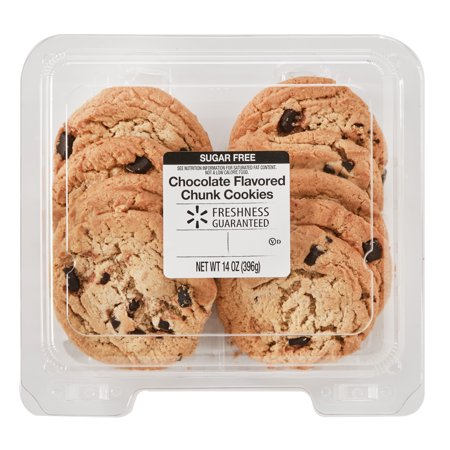

Why Raisins are the Worst
By Haley Billson
Raisins are not a treat and should not be used in desserts! A raisin is a grape that has been dried out either naturally or mechanically. It essentially tastes like very sweet and slightly bitter leather. I personally am not a fan of chewing leather and therefore I don't like raisins. If you have extra grapes leftover that you are unsure what to do with, the answer should always be to make wine with it! I am skeptical of the first weirdo who, after accidentally leaving their grape outside for days, looked at it and said "hey, that looks like a tasty snack."
Why would you trust this?!
When I was a baby, my parents thought that I loved Tim Hortons' Oatmeal Raisin cookies, as I would happily take and eat them as most children do, but they had a nasty surprise waiting for them when they decided to clean my car-seat weeks later and discovered that I'd stuffed hundreds of raisins anywhere I could fit them in the seat. Growing up, I was contantly exposed to my least favourite fruit against my will. People even handed out raisin boxes instead of Halloween candy!

Imposters...
Raisins can be easily mistaken for chocolate chips. This has made baked-good consumption a tense, nerve-wracking experience. You just cannot trust cookies, butter tarts, carrot cake or zuccini loaf anymore. Picking raisins out of the baked good is possible, and often worth the effort depending on the deliciousness of the item, but you can never completely remove every trace of raisin. Raisins make things awkward -- if someone makes their own treat and offers it to you, it's very impolite to mention that you don't like the raisins. You must politely accept the treat and eat it, raisins and all, hoping that the baker can't see the pain in your eyes. You can, however, try to spit out the raisins when they're not looking, and stick them in the nearest inconspicious spot.
Why Raisins Are The Best
The right answer
By Emily Kingma
Raisins are the best sun-dried fruit. They are far superior against other dried fruit like cranberries, which are a disgrace to the berry name. Raisins are amazing whether they are in cookies, butter tarts, or even by themselves. They make great snacks alone that are also healthy so it is a great way to get your kids to eat healthier options. You can also buy them in those little red cardboard boxes and that's just adorable, what other snacks are in tiny boxes? That's right, none of them.
When raisins are put into other food such as cookies, it enhances the flavour profile as well as adds a great texture balance because you get this nice gooey spot in you bite that meshes well with a crunchy cookie. The flavour of the raisins go well with anything it is in especially things with cinnamon. There is nothing better than having some cinnamon toast with raisins in the morning to help start your day with a delicious treat. Raisins are so versatile that they can be used for breakfast, lunch, dinner, and dessert and also are good for you. You could eat raisins all day if you really want to.
Therefore, raisins are the best.